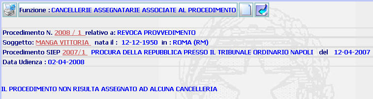
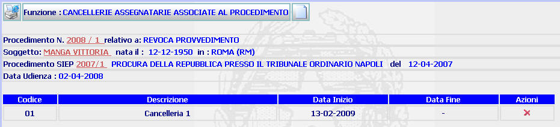

CANCELLERIE ASSEGNATARIE ASSOCIATE AL PROCEDIMENTO: La funzione consente di visualizzare le cancellerie (inserite sul sistema dall'Amministratore di ufficio attraverso la funzione inserimento cancelleria assegnataria) associate al singolo procedimento. Consente altresì di inserire una cancelleria (quando il procedimento ne sia privo) o di inserirne una diversa rispetto a quella precedentemente assegnata.
LE MASCHERE VIDEO
La funzione viene realizzata attraverso le maschere seguenti in cui compare il dettaglio del procedimento e si dà la possibilità di inserire una cancelleria al procedimento o di cancellarne una precedentemente assegnata.
Maschera 1

Maschera 2

COME FARE PER ...
| Per visualizzare il dettaglio del procedimento Sius l'utente deve cliccare sul link relativo all'Anno/Numero del procedimento Sius evidenziato in rosso; |

| Per visualizzare il dettaglio del soggetto l'utente deve cliccare sul link relativo al cognome/nome del soggetto evidenziato in rosso; |

| Per visualizzare il dettaglio del procedimento Siep l'utente deve cliccare sul link relativo all' Anno/Numero del procedimento Siep evidenziato in rosso; |

| Per
inserire una
cancelleria (o inserirne una nuova rispetto a quella precedentemente
assegnata), l'utente deve selezionare il pulsante
|
| Per
cancellare una cancelleria
precedentemente assegnata, l'utente deve selezionare il pulsante
|
|
Per
tornare alla maschera precedente l'utente
deve selezionare il pulsante
|
PULSANTI
Sono presenti i pulsanti
 ,
,
 ,
,
 e
e
 , facenti parte del gruppo di
pulsanti di "Uso Comune"
, facenti parte del gruppo di
pulsanti di "Uso Comune"
CONTROLLI
Il sistema verifica che esistano Cancellerie Assegnatarie per l'ufficio di appartenenza, fornendo in caso contrario il seguente messaggio